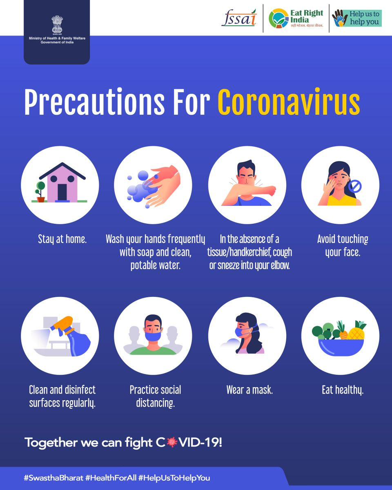
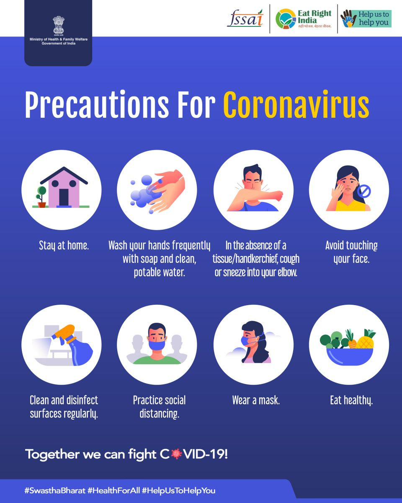

Two vaccines were granted emergency use authorization by the Central Drugs Standard Control
Organization (CDSCO) in India, Covishield® (AstraZeneca's vaccine manufactured by Serum
Institute of India) and Covaxin® (manufactured by Bharat Biotech Limited). Sputnik - V has
been granted EUA in the month of April 2021.
Why vaccination is not provided to children who are usual target?
COVID-19 affects all age groups; however, morbidity & mortality is several times higher in
adults particularly in those above the age of 50 years. Children have either asymptomatic or
mild infection. The general practice is to first evaluate any new vaccine in older
population and then age reduction is done to assess the safety and effectiveness in
paediatric population. The currently available vaccines have not been evaluated in children
so far. There are some clinical trials now underway to test the effectiveness and safety of
the COVID-19 vaccines in children.
Is it mandatory to take the vaccine?
Vaccination for COVID-19 is voluntary. However, it is advisable to receive the complete
schedule of COVID-19 vaccine for protecting oneself against this disease and also to limit
the spread of this disease to the close contacts including family members, friends,
relatives and co-workers.
Will the vaccine introduced in India be as effective as the ones introduced in
other countries?
Yes, the COVID-19 vaccine introduced in India will be as effective as any vaccine developed
by other countries. Various phases of vaccine trials are undertaken to ensure its safety and
efficacy.
Which vaccine is better between Covisheild and Covaxin?
There is no head-to-head comparison done between the two vaccines being used in India so one
cannot choose one over the other. Both would work fine in preventing the infection as well
as prevent a person from going into severe state of the disease. As a long-term effect, it
would be preventing death for elderly people or those who have comorbidities.
Is it important for me to receive the same vaccine during second dose?
As the vaccines available are not interchangeable, it is important to receive the second
dose of same vaccine as the first one. The Co-WIN portal is also going to help to ensure
that everyone receives the same vaccine.
 
